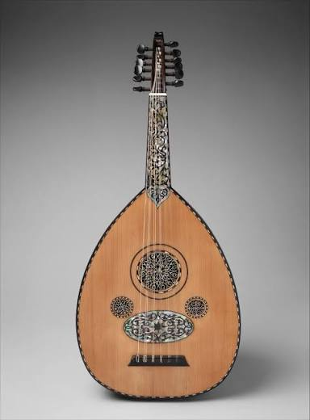

The fretless lute of Arabic and Andalusian music, built around quarter-tones and improvisation rather than fixed frets. I've played for years, and eventually built a tool around it: a SaaS that transcribes oriental songs into sheet music, shown below.

A short performance. Hearing the oud says more than any paragraph can.
A tool that solves a problem most oud students run into: oriental songs mostly exist in recordings and oral tradition, not on paper. It listens to a recording and writes it down.
Oriental music is hard to notate: the maqam system uses microtones that standard Western notation doesn't represent well. This tool takes an oriental song and transcribes it into readable musical notation, so learners can sit down with their oud and play it instead of learning it by ear from a recording.
Takes an oriental song as input and analyzes its pitch and rhythm over time.
Handles the microtones and ornaments that make oriental music resist standard notation.
Outputs clean, readable sheet music you can print, share, and practice from.
Both come down to the same practice: listen closely, find the structure, then build.
It keeps me patient and used to iterating by ear, which carries over to work. And the day job gave me the tools to build something for it.